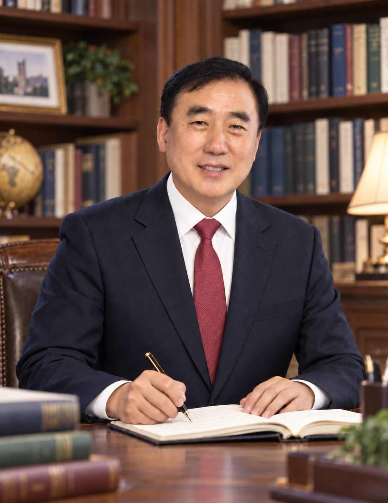

DIRECTOR’S MESSAGE
GTCC 부설 연구소장이성종 박사
Dr. Seong-Jong Lee
노인학 박사 · GTCC대학교 교수
웰에이징 평생건강교육원장 · 목회자 · 저술가
인간의 존엄과 건강한 노년을 연구하는
웰에이징 교육의 선구자
“노년은 인생의 끝자락이 아니라, 지혜와 성숙이 새로운 가치를 만들어 내는 또 하나의 황금기이다.”
WELCOME
건강한 노년, 품격 있는 삶을 향하여
GTCC Institute for Well-Aging and Lifelong Health를 찾아주신 여러분을 진심으로 환영합니다.
우리는 지금 인간의 수명뿐 아니라 삶의 방식과 사회의 가치가 함께 변화하는 고령사회를 살아가고 있습니다. 저는 이러한 변화 속에서 노년을 돌봄과 보호의 대상으로만 바라보기보다, 배움과 성장, 참여와 공헌의 주체로 이해하는 일이 중요하다고 생각합니다.
우리 연구소는 인간의 존엄과 건강한 삶을 중심에 두고 노인학, 웰에이징, 평생건강교육의 가치를 함께 탐구하고자 합니다. 신체적 건강은 물론 마음의 안정과 인지건강, 사회적 관계와 영적 성숙을 함께 바라보는 통합적 관점으로 노년의 삶을 이해하고자 합니다.
노인학 아카데미와 온라인 교재, 연구·교육 자료는 이러한 배움을 일상과 연결하는 통로입니다. 나이와 관계없이 새로운 배움에 도전하고, 서로의 경험을 나누며, 자신의 가치를 발견할 수 있는 열린 연구·교육의 장을 만들어 가겠습니다.
목회 현장에서 만난 삶의 이야기와 노인학 연구를 통해 쌓아온 관심을 바탕으로, 이론과 실천이 함께하는 웰에이징 교육을 위해 노력하겠습니다. 누구나 존엄을 지키며 의미 있고 행복한 노년을 살아갈 수 있도록 여러분과 함께 질문하고 배우겠습니다.
건강한 노년과 품격 있는 삶을 향한 여정에 따뜻한 관심과 동행을 부탁드립니다. 감사합니다.
GTCC Institute for Well-Aging and Lifelong Health
부설 연구소장 이성종 박사
EDUCATION & EXPERIENCE
주요 학력과 경력
주요 학력
- 1989.02
전북대학교 인문과학대학
졸업
- 2010
백석대학교 실천신학대학원
졸업
- 2025.09
필리핀 GTCC대학
교육철학 명예박사
- 2026.09
필리핀 GTCC대학원
노인학 박사
주요 경력
- 현재
GTCC대학교 교수
- 현재
GTCC대학교 부설 웰에이징 평생건강교육원 원장
- 현재
국제평생교육개발원 교수
- 2006–2016
사랑의교회 부목사
목양·어르신·청소년 사역
- 2017–현재
말씀사랑의교회 담임목사
PUBLICATIONS & TEXTBOOKS
주요 저서와 교육 교재
『노인 인지 통합치료』
노년기 인지기능과 통합적 접근에 관한 연구
『웰에이징 통합건강학』
신체·정신·사회적 건강을 아우르는 전인적 건강관리
『시니어 평생건강학 개론』
건강한 노후와 평생건강교육의 기초
『노인심리상담학』
노년기 심리 이해와 상담의 이론 및 실제
PROFESSIONAL QUALIFICATIONS
관련 자격
- 사회복지사
- 요양보호사
- 가족심리상담사
- 병원동행매니저
- 인지재활지도사
- 시니어뇌교육지도사
- 치매예방전문강사